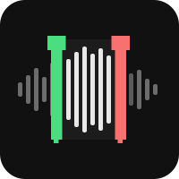

Audio Extractor
(made by Claude AI)
♪
Source file
Drop an audio or video file here, or click to browse
Waveform
Zoom
Pan
Duration: —
Selected: —
Region
Start
End
Max
Length
All values in seconds
Audio format
Input
—
Output
AAC
WAV
Bitrate
96 kbps
128 kbps
160 kbps
192 kbps
Fade
Fade in (s)
Fade out (s)
▶ Preview
✂ Extract to file: